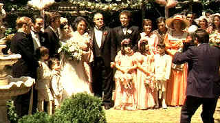

| Godfather
(SE)/A,B+ |
| Paramount/1974/175/ANA 1.85 |
A classic saga of Machiavellian deceit and family loyalty, The
Godfather ranks as one of the great films of the modern era. The Godfather retains the strongest sense of
family of the three films and that is one of its great strengths. Amidst the odious deeds of gangland machinations, the core of family is the most important thing to Vito Corleone, founder of the Corleone
crime family. The brilliant opening prologue before the wedding defines so much about the world of The
Godfather. All of the Godfather films feature celebrations or religious services that play against the dark world behind closed doors. Gordon Willis's photography is truly spectacular. Examining the hues of
The Godfather, it's almost as if you could peal away the layers of color returning to a browning photo of another world dictated by older values of loyalty and fealty akin to a time of small lords of the land.
The Godfather tells the tale of the Corleone Mafia Family under the
strain of change. There are changes within the family and changes within the other families of the
Mafia underworld. Don Corleone represents a certain sense of honor within the dark world. His
reluctance to let his family part become of the drug trade leads to dire consequences. There are countless mesmerizing moments that singe the memory. Sonny's defense of his sister, Vito in the garden, the Italian restaurant meeting, Woltz's nightmare, one
toll too many; and the wedding is magnificent. The dancing, the songs, the perfect montage, the Johnny Fontaine entrance, and all the while business in the back room continues. The
feudalistic Sicilian scenes stand in beautiful contrast to the growing city sophistication of New
York.
 |
| Just an Italian family wedding. ©Paramount |
Each of The Godfather characters is faithful to their roots. Every act performed is true to character. Vito Corleone,
whispering his commands, thinking ahead like a chess grand master, is a dangerous but fair man. He deals in necessities. His Machiavellian instincts are honed from years of survival.
First born child Sonny is a wild stallion that cannot fully contain his explosive nature. Michael has a cool ice backbone unflinching under the gun, calm and aware, like a jungle animal. You can see his father in him, yet they are different. Michael lacks the warmth of his father. Connie is the spoiled dutiful daughter, adoring her father, basking in the life of privilege. Irish Tom Hagen, always a touch of the outsider in this Italian family despite his status as adopted son Vito Corleone. The slightly slow mental abilities of Fredo Corleone can't hide a lingering hunger for respect from his family.
Part of the brilliance of The Godfather is how well it sets the operatic stage for this world. Look at all those strong supporting characters. Clemenza's old world feeling is brought perfectly to boil in the kitchen as he instructs Michael on the art of making a pasta sauce.
Assassin Luca Brasi sits mumbling a memorized speech before he speaks to the Godfather at the great wedding sequence, a fumbling ferocious wild boar. Cop McClusky is one of the more operatic character, a creation of unsurpassed arrogance.
Direction of The Godfather is a major achievement. The film never
falters. Francis Ford Coppola commands all the movie making machinery through the internecine world
of Hollywood coming away as a survivor, just as Don Corleone managed to survive. Coppola uses his
team of filmmakers like a great general. Coppola's pacing is maintained with breathless precision throughout the film.
It moves with the same grace as the music, it flows with beauty equal to Gordon Willis's stunning
photography, and the characters of Mario Puzo come to life through an outstanding script. The
editing has become a hallmark of the film. Incisive cross-cutting emphasizes different aspects of
the film with cunning brilliance.
The enigmatic Marlon Brando scores big time as Don Corleone, the Godfather.
Brando's Corleone is frighteningly calm. His voice is worn rough by the grindstone of survival. His
speech patterns are halted, thought out, deadly. It is truly a brilliant performance. Brando won a
deserved Oscar© for Best Actor as Don Corleone. Al Pacino is equally terrific as Michael,
frightening in his own way, even more dangerous than his father. Pacino underplays Michael, playing
the biggest moments with a hint of ice. James Caan packs Sonny with Nitro energy. With a street
charm and a disgusting arrogance, Caan is on the money. Robert Duval plays it close to the shadows
as Tom Hagen. Duval never strays fromt he arch of his character. Talia Shire is a wonderful Connie
Corleone and John Cazale tinges Fredo with a helpless sadness. Richard Castellano is grand as
Clemenza and Diane Keaton is a perfect cold fish Kay.
Technically, The Godfather runs a great race against perfection.
The adaptation of the novel by author Mario Puzo and Coppola is a beautiful script, detailing the murders and deceit within the framework of loyalty and family. Dialogue rings with truth of character. The pacing, like the languid music of Nino Rota, moves elegantly, a great cat of the jungle with a sense of every broken twig. But
The Godfather never lacks a sense of story urgency. Production design captures every locale. These are the places where these guys live. The details are harmonious. Gordon Willis's photography is thoroughly brilliant. The lighting is masterful. Shadows lingers at the edges of every scene. Darkness is never far from the core of
The Godfather. The film won the Academy Award as Best Picture and Coppola and Puzo
shared the Oscar© for Best Adapted Screenplay.
The Godfather is delivered in a transfer true to the material. The
subtle Gordon Willis cinematography is never compromised by the limits of DVD. Shadow detail is
maintained with vigorous precision. Blacks are creamy, elegant. The yellow cast that coats the look
of the film is almost painted onto the transfer. Colors are very faithful to the original elements.
A few specs of dirt are barely noticeable in the source material. This is a very clean transfer.
Moody grain is delivered in fine tight patterns. Everyone involved with the DVD production can be
proud of their work. The Dolby Digital 5:1 Surround encoding sometimes has a slightly hollow ring
to it, but dialogue is clear, the music airy.
Coppola's audio commentary is fabulous. Time becomes an onion of infinite layers
as Coppola peels through layers of memory. I can only tell you listening to Coppola relate how he was nearly
canned as director before taking his own Godfather-like action is a privilege. Every anecdote, whether it bears
on technical aspects of The Godfather or the director's youth growing up in an
Italian family are a gift to film lovers and historians alike. Coppola is incredibly comfortable
talking about The Godfather. It's like he's been rehearsing a record of these films ever since they
were made. Can you believe that the Paramount powers could not see Brando in the title role.
Coppola fought a campaign for his vision, from the actors to the music to the edit. The commentary
is one more jewel in the treasure chest of The Godfather.
Special congratulations to Paramount for their quick access to the features.
How come Paramount is smart enough not to throw the FBI Warning up in front of every disc? You
don't automatically go to the menu system either, but the film begins, the experience begins.
|
|
|
|

Selections from the Feature Archive include articles on
Akira Kurosawa, Blonde Bimbos,
Frank
Darabont, Steven Culp,
John
Herzfeld or Vietnam: The
Hollywood Pariah, and many more....
Transferring
Zoetrope's Vision

American Zoetrope's Technical Director Kim Aubry talks about bringing the studios product out in
the best light. Click on the image for the interview.
Vietnam:
The Hollywood Pariah

During World War II, Hollywood pumped out war movies one after the other. Vietnam was was another
story. As far as Hollywood was concerned it was a pariah.
 
The home of Francis Ford Coppola's Zoetrope
Studios has more corridors of interest than you might expect.
 Brad Lang continues to add more interesting material to the extensive
collection at Classic
Movies. Everything from actors and actress to your favorite directors is
linked at the site. Brad Lang continues to add more interesting material to the extensive
collection at Classic
Movies. Everything from actors and actress to your favorite directors is
linked at the site.

Excellent resource for movie review links, with many early looks.

A new Films on Disc space dedicated to purging accumulated home
theater angst and other movie related frustrations, with a measure of praise to balance the
vitriol. The first column takes on:
Inserts and the Pop-Up Window

Searchers,
The/ A,B

John Wayne invests Ethan Edwards with enormous dignity and
determination. A classic western from director John Ford. Mesmerizingly beautiful.

The
Movie Poster Archive includes extensive poster images from the films of stars like Susan Hayward,
Kirk Douglas, Katharine Hepburn and many more. Our featured star is Gregory Peck

Click on the DVD MIA symbol for
profiles of DVDs missing in action.
Add films to the DVD MIA Master List by filling out
a simple form. Click Here
|